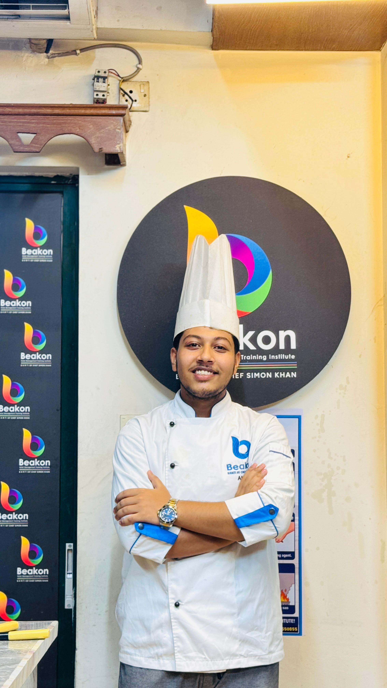

TRAINEE CHEF
Md Ahnaf Siddiq
Building a Career in Culinary Excellence
Professionally trained in culinary arts, bakery and pastry, and beverage preparation, with a strong focus on kitchen discipline, food safety, presentation, and continuous professional development.

Profile
A Culinary Professional in Progress
To establish myself as a skilled culinary expert specializing in diverse cuisines, I focus on mastering modern cooking techniques and creating high-quality culinary experiences. My goal is to work in dynamic kitchen environments, continuously improve my craft, and build a distinguished identity as a professional chef in the international food industry.

Kitchen discipline. Fine presentation.
Qualifications
Professional Training & Qualifications
Qualification 01
Diploma in Culinary Arts
Simons Culinary Institute
Nikunja-2, Khilkhet, Dhaka
A structured culinary foundation focused on kitchen discipline, ingredient mastery, food preparation, and professional service standards.
Qualification 02
National Skills Certificate — Bakery & Pastry, Level 3
National Skills Development Authority (NSDA), Bangladesh
- Bakery & Pastry Production
- Bread, Bun & Dough Preparation
- Cake & Pastry Production
- Baking Techniques & Oven Operation
- Food Safety, Hygiene & Sanitation
- Basic Decoration & Presentation
Qualification 03
Professional Beverage Training — Barista
Grade: A
- Coffee Preparation & Brewing
- Espresso Machine Operation
- Espresso-based Beverages
- Milk Steaming & Frothing
- Latte Art
- Café Hygiene & Food Safety
- Basic Café Customer Service
Qualification 04
Professional Chef Course — Level 1
International Culinary Institute (ICI)
Jointly offered by: The World Master Chef Society (WMC)
Core Competencies
Culinary Skills
Culinary Preparation
- Food Preparation & Cooking
- Knife Skills
- Mise en Place
- Basic Cooking Methods
- Meat Preparation
- Poultry Preparation
- Fish Preparation
- Rice & Pasta Preparation
Kitchen Operations
- Kitchen Equipment Handling
- Kitchen Organization
- Time Management
- Teamwork & Communication
Sauces & Presentation
- Sauce Preparation
- Soup Preparation
- Food Plating
- Food Presentation
Food Safety
- Food Safety & Hygiene
- HACCP Awareness
- Kitchen Sanitation
Education
Academic Background
18 Months
Simons Culinary Institute
Diploma in Culinary Arts
Beakon Hotel Management & Training Institute, Nikunja
2024–2025
Shahebabad Islamia Kamil Madrasah
Secondary School Certificate (SSC)
Bramonpara, Cumilla
Language
Communication
Bangla
Native
English
Basic Communication Skills
Professional References
Verified Professional Contacts
Daniel C. Gomes
Corporate Executive Chef, ICI
- Phone +880 1932151000
- Email daniel@cedu.bd
-
Address
House 27/1, Road 134 (2nd Floor), Dhanmondi, Dhaka-1209
Chef Saimon Khan
Principal, Simons Culinary Institute
- Phone +8801874-111124
- Email simonsculinaryinstitute@gmail.com
Contact
Open to Culinary Opportunities
Interested in professional culinary opportunities, training environments, and international hospitality careers.